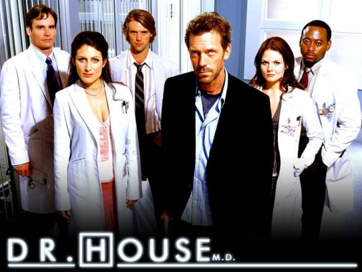
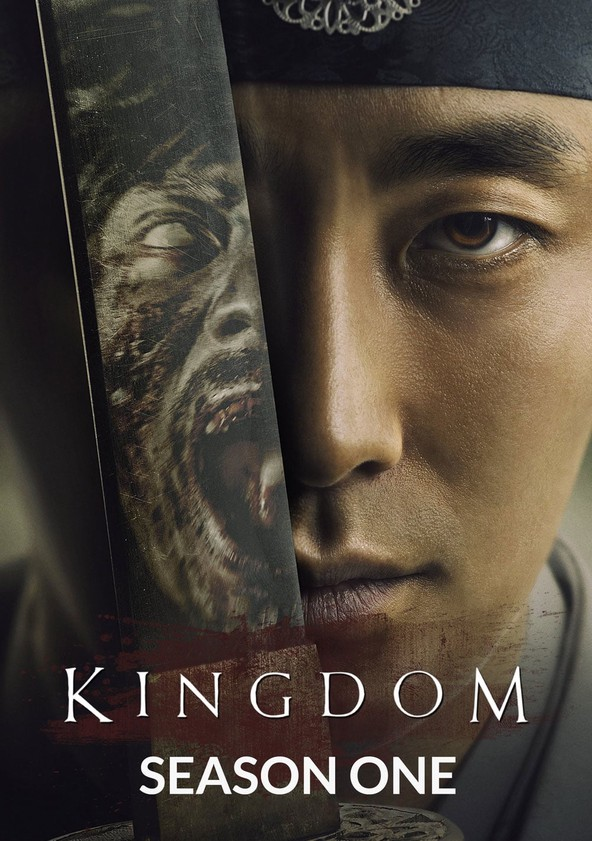
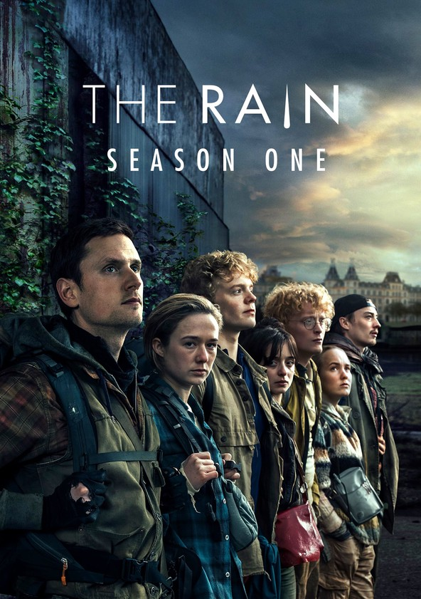
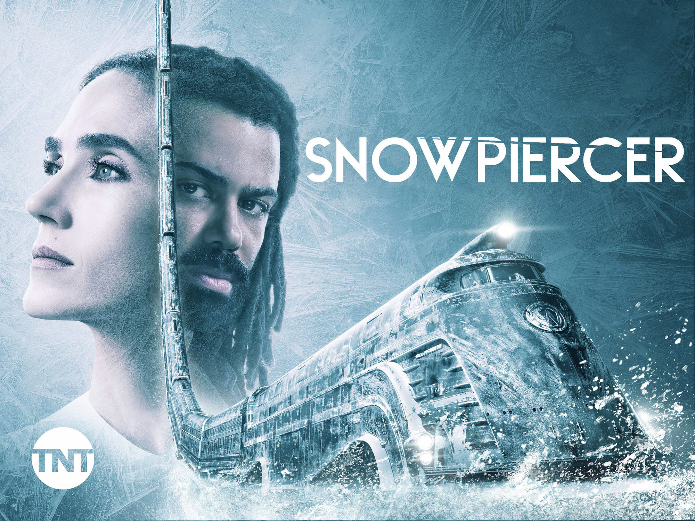
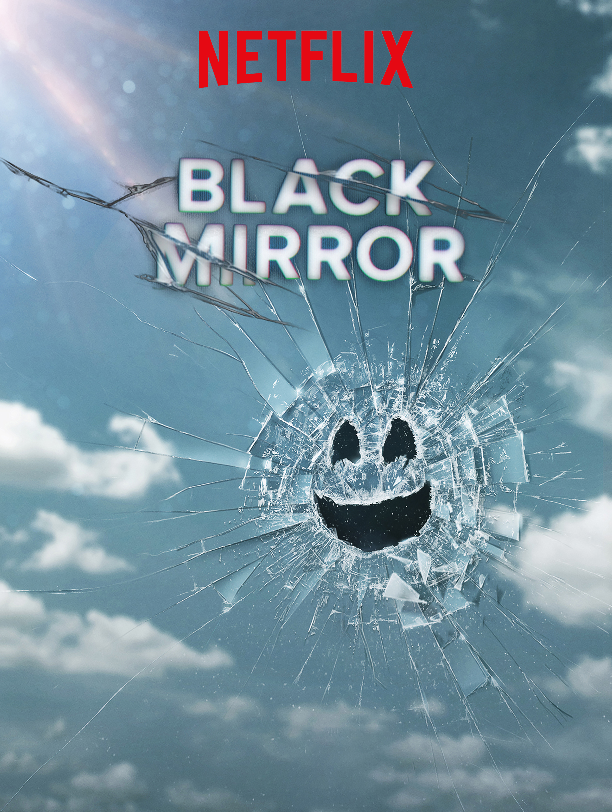
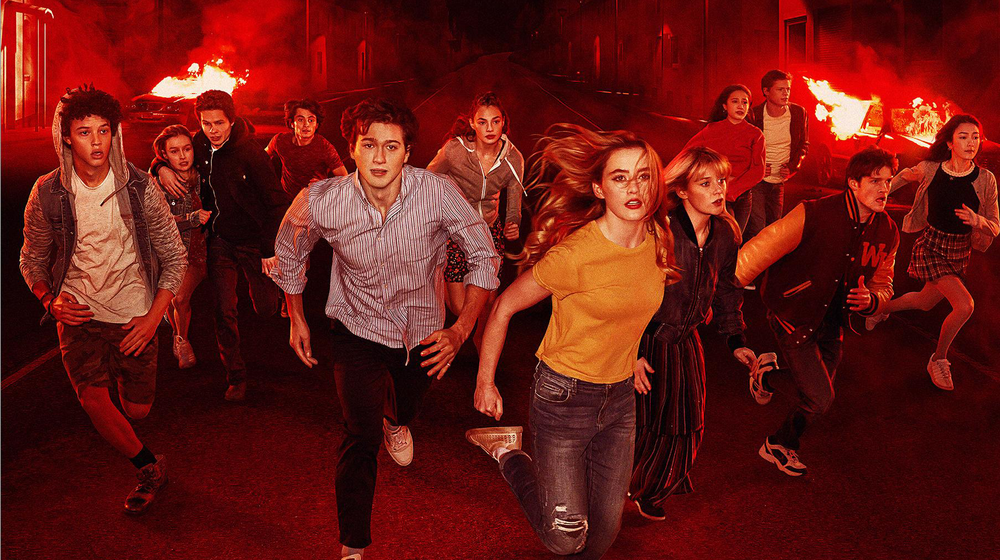
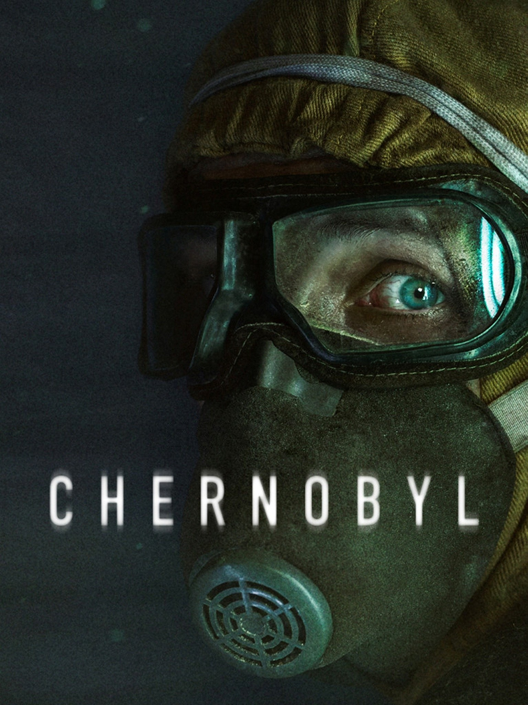
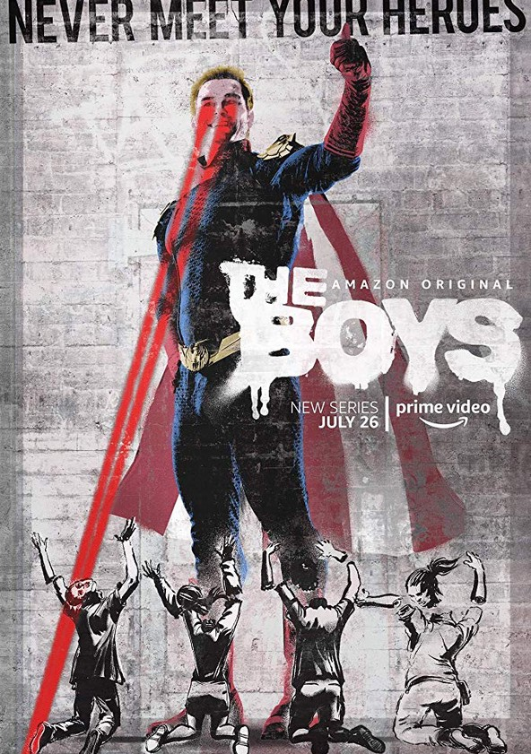
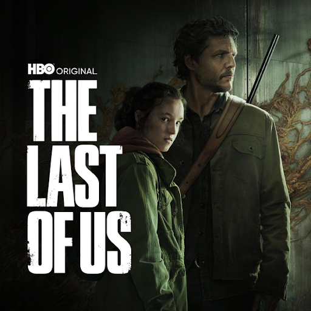

Series
Dr. House

Kingdom

The Rain

Snowpiercer

Alice in Borderland
Black Mirror

The Society

Chernobyl

The Boys

The Last of Us

Follow the brilliant but misanthropic Dr. Gregory House, an unconventional medical genius who leads a team of diagnosticians at Princeton-Plainsboro Teaching Hospital. With his abrasive personality and unorthodox methods, House tackles puzzling medical cases while battling his own personal demons.
Set in Korea's Joseon period, "Kingdom" is a gripping blend of historical drama and zombie thriller. As a mysterious plague spreads across the land, Crown Prince Lee Chang must navigate political intrigue and fight to save his kingdom from both human and undead threats.
In this Danish post-apocalyptic drama, siblings Simone and Rasmus emerge from a bunker six years after a deadly virus carried by rainfall wiped out most of the population. As they search for safety and answers, they encounter other survivors and uncover dark secrets about the origins of the virus.
Based on the film by Bong Joon-ho, "Snowpiercer" is set in a frozen, dystopian world where the remnants of humanity live aboard a perpetually moving train. Divided by class and privilege, the passengers on the train must navigate social unrest and power struggles while struggling to survive in the harsh environment.

After finding themselves transported to a deserted Tokyo where they must compete in deadly games to survive, a group of friends led by Arisu embarks on a high-stakes journey of strategy, survival, and self-discovery in this Japanese adaptation of the manga series.
An anthology series that explores the dark and often twisted implications of modern society's relationship with technology. Each standalone episode presents a speculative vision of the future, offering thought-provoking commentary on issues such as privacy, identity, and the consequences of technological advancement.
When a group of teenagers returns from a cancelled camping trip to find their affluent New England town completely deserted, they must forge their own society and confront challenges of governance, morality, and survival in this modern twist on "Lord of the Flies."
A gripping historical drama that chronicles the events leading up to and following the catastrophic nuclear disaster at the Chernobyl Nuclear Power Plant in 1986. The series explores the human cost of the tragedy, as well as the political and scientific complexities surrounding it.
In a world where superheroes are revered as celebrities, a group of vigilantes known as "The Boys" set out to expose the corrupt and often violent truth behind the corporate-backed heroes. As they take on super-powered individuals and the powerful conglomerate that controls them, they uncover dark secrets and confront moral dilemmas.
Based on the videogame with the same name, "The Last of Us" is set in a post-apocalyptic world ravaged by a fungal infection that turns humans into mutated monsters, "The Last of Us" follows the journey of Joel, a hardened survivor, and Ellie, a young girl who may hold the key to humanity's survival. As they traverse the dangerous landscape of the United States, they must confront both the horrors of the infected and the cruelty of fellow survivors.